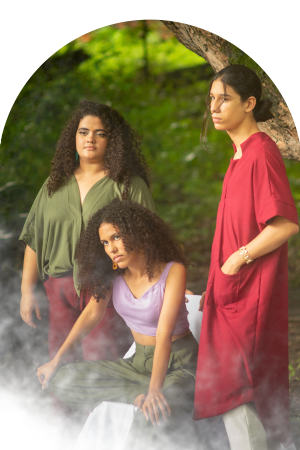

Nosso conceito
"Somos vozes cearenses de moda agênero atemporal, visando o slow fashion."
Proposta
Resgatar uma moda humanizada, observando aspectos de segurança sustentabilidade na produção. Abrir oportunidade para criação e difusão da moda agênero. Garantir sustentabilidade em todas as etapas da produção e distribuição dos produtos.
Inspiração
Nossa inspiração surge nas fibras naturais, corantes naturais e processos sustentáveis. Onde poderosas civilizações antigas se valiam de tais processos para conseguir uma moda atemporal e agênero.